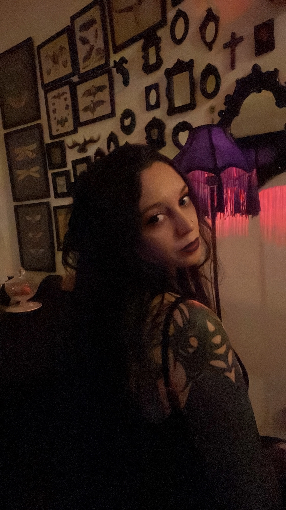

𝔖𝔬𝔟𝔯𝔢
About


Sou Thaisi Gomes, ilustradora formada em Design Gráfico e Digital.
Minhas criações são inspiradas na literatura gótica, com influências do vampirismo, da melancolia e do horror da era vitoriana.
Trabalho com ilustrações digitais de personagens em diferentes formatos, desde conteúdos para redes sociais até capas de livros (digitais ou físicos). Também produzo artes voltadas para impressão, ideais para quadros, pôsteres e decoração.
I'm Thaisi Gomes, an illustrator with a degree in Graphic and Digital Design.
My creations are inspired by Gothic literature, with influences from vampirism, melancholy, and Victorian-era horror.
I work with digital illustrations of characters in different formats, from social media content to book covers (digital or physical). I also produce artwork for printing, ideas for paintings, and decoration.
Prints disponíveis nas lojas abaixo:
ℭ𝔬𝔫𝔱𝔞𝔱𝔬𝔰
Contacts
Para solicitar uma comissão, envie sua ideia de arte por um dos canais abaixo.
𝔓𝔬𝔯𝔱𝔣𝔬𝔩𝔦𝔬